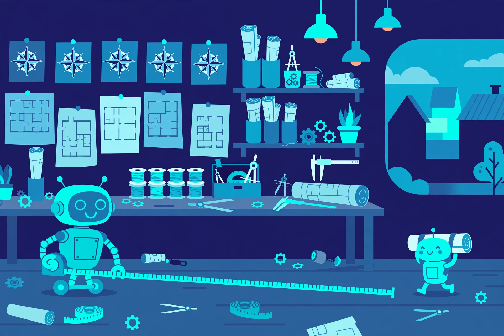

Welcome to the Robot Cartographer’s Workshop — tape measures out, floor plans on the wall, and a little robot carrying the maps.
Meet Mappy the Measuring Bot, the mascot of this world.
Signature Space Mapping turns room photos, video, or live camera into top-down maps with real measurements — plus robot packs future robots can navigate with. The archive holds 13,700 records.
Two working tools, right here on the page. Each one says what it does and what it cannot do. Neither tool reaches the live web, and neither one needs a key.
Enter a room’s length and width to get its area in square metres and square feet. The living room of the first map measures 12.1 by 10.8 feet.
Length: Width:
Search the 500-map sample on this page by map name. Shows up to 10 matches.
Search:
Designs, printables, and demos — free, downloadable, usable on the page. Every product is labeled Signature or Fun. Nothing here is for sale.
A printable card for a robot pack: one room map with its rooms, its doors, and its measurements, ready to hand to a robot.
Making: print the printable file on card and keep it with the map. The card is a design, not a working robot part.
A poster of the workshop wall: floor plans, compass roses, and the little robot carrying a map.
Making: print the printable file and pin it up. The plans on it are drawings, not plans to build from.
A printable paper tape measure, marked in feet and metres, for measuring a room by hand.
Making: print the printable file, cut out the tape, and glue the sections end to end. Check it against a ruler before use.
Download all product lines as a printable (text)
Mappy the Measuring Bot once measured the whole workshop twice, got the same answer both times, and framed the tape for it. The tape still hangs by the door. (Fun — a made-up tale, not a record.)